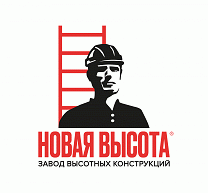

MITEX 2026 · Россия · Стенд 8D903
Завод высотных конструкций, ООО
Карточка проверена 10 ноября 2026, 09:25 · Источник ↗ · Снимок оригинальной карточки ↗
О компании
Завод высотных конструкций с 2010 года производит широкий ассортимент высотных изделий для работ на высоте: • Одно-, двух- и трехсекционные алюминиевые лестницы; • Одно- и двухсторонние стремянки, • Лестницы-трансформеры, • Рабочие подмости и площадки, • Платформы и лестницы с помостом, • Монтажные подставки, • Вышки-туры до 12,5 метров и много другое. Модельный ряд изделий Завода насчитывает более 1700 видов высотного оборудования. Продукция компании известна под торговыми марками «Новая Высота», «Артель», «Vira», «Kroft». Завод проектирует и изготавливает специальные конструкции под нужды клиента. Каждое из наших высотных изделий разрабатывается с учётом особенности отрасли и используется в промышленных цехах, на территории складов и открытых площадках. Мы предлагаем разнообразные решения, включая: • Изделия с индивидуальными параметрами на базе серийной продукции. • Изделия, созданные по вашему техническому заданию и чертежам. • Изделия, разработанные специально под индивидуальные требования. Мы выезжаем на вашу территорию, изучаем потребности и специфику задач, формируем чёткое техническое задание, которое станет основой для дальнейшей работы. Система менеджмента качества (СМК) по ГОСТ Р ИСО 9001-2015, принципы «бережливого производства», талантливая команда инженеров-конструкторов и технологов позволяют нам выпускать безопасную и надёжную продукцию, которую по достоинству оценили более 2 500 предприятий и организаций, а также миллионы частных потребителей в России и за рубежом.
Контакты
Все контактные сведения из карточки
Контакты Телефон: +78124497990 E-mail: nv-event@zavodnv.ru Адрес: 188301, Россия, Ленинградская область, Гатчинский район, промзона Корпиково, д. 2, пом. 108 Веб-сайт: https://zavodnv.ru/ru/ E-mail: nv-event@zavodnv.ru Телефон: +7 (812) 449–79–90
Все рубрики участника
Mitex - Рубрикатор
- 2. Садовая техника, инструмент, инвентарь, оборудование, расходные материалы и насосы
- 4. Инструмент и оборудование для строительно-монтажных, окрасочных и малярных работ
- 5. Слесарный, монтажный, столярный, ручной инструмент
- 12. Крепеж, метизы, скобяные изделия
- 13. Приспособления для мастерских и складов, системы хранения, тара и упаковка
Зал
- Зал № 8
Участник выставки
- MITEX
Фотографии и изображения

Видео, каталоги и документы
В доступной карточке нет видео или документов. Смотрите сайт участника.
Новости из карточки
Новость участника
03.11.2026 13:30 Приглашаем вас на международную строительную выставку MITEX-2026, где Завод высотных конструкций «Новая Высота» представит новинки и популярные модели оборудования для работы на высоте. В экспозиции — современные стремянки, трёхсекционные лестницы, трансформеры, индустриальные лестницы-подмости и многое другое. Домашние стремянки «Надёжа» — полностью российская разработка для повседневных хозяйственных задач. Практичное решение для дома, квартиры и дачи. Анодированные стремянки — алюминиевые модели с защитным покрытием, которое повышает стойкость поверхности к коррозии, помогает сохранить аккуратный внешний вид и предотвращает появление тёмных следов на руках. Шарнирные лестницы-трансформеры — универсальные конструкции с несколькими рабочими положениями для ремонта, монтажа и обслуживания объектов. Передвижные лестницы-подмости — индустриальные решения для интенсивной эксплуатации на производственных и складских площадках. Передвижное исполнение позволяет удобно перемещать оборудование между рабочими зонами. Трехсекционные лестницы - от профессиональных до индустриальных. Это универсальное оборудование для строительства, монтажа, ремонта и промышленной эксплуатации. Посетители MITEX-2026 смогут лично ознакомиться с новинками и хитами продаж, обсудить технические особенности оборудования с представителями Завода и получить консультацию по подбору серийных или индивидуальных решений. Ждём вас на MITEX-2026! 10–13 ноября 2026 года МВЦ «Крокус Экспо», Москва Павильон 2, зал 8, стенд 8D903